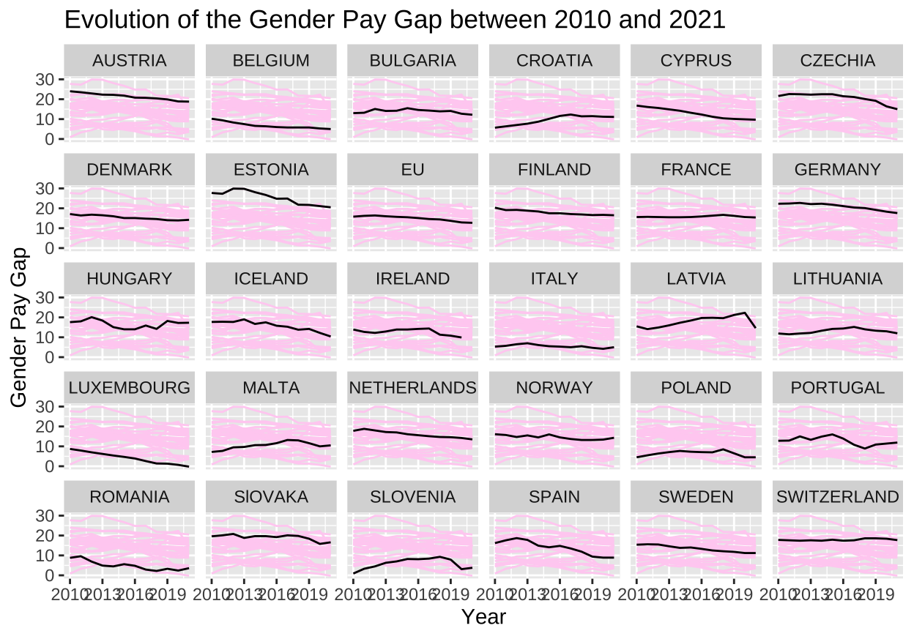
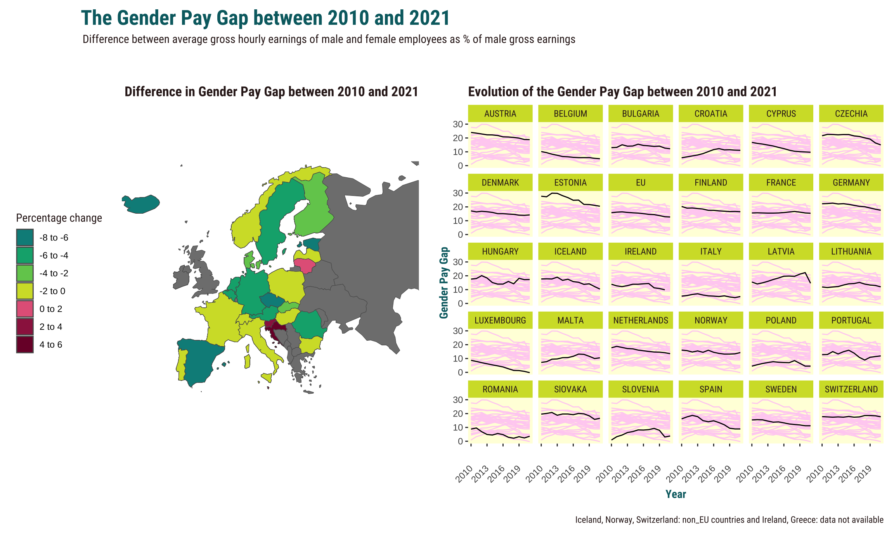

Using Eurstat data to reproduce the Gender Pay Gap graph of 2020.
The Gender Pay Gap graph of 2020 as presented below is created by Eurostat which is the European office for statistics by the European Commission. The graph shows a literal gap in the earth with a woman and man standing on top of it. For them, the gap is almost invisible as the smaller gaps are closest to the surface. Eurostat collects data concerning the labour market. The Gender Pay Gap is calculated as “the difference between the average gross hourly earnings of men and women expressed as a percentage of the average gross hourly earnings of men” (Eurostat, 2021), and is used as a proxy for the inequality between men and women.
The following libraries are used for the graph replication and the graph improvement
First, the data is cleaned, that is, important NA’s and non-useful variables are deleted and only data for the year 2020 is kept. The variables ‘obs_left ’and ’obs_right’ are created which are needed to later compute the main graph. The variable ‘rank’ is computed to order the countries from the highest to the lowest pat gap.
gender_pg <- read_csv("gender_pg.csv")
data <- gender_pg |>
filter(TIME_PERIOD == 2020) |>
filter(!(geo %in% c("EA20", "EA19"))) |>
drop_na(OBS_VALUE) |>
select(-("DATAFLOW":"nace_r2")) |>
select (-("OBS_FLAG")) |>
mutate(obs_left = (OBS_VALUE/2)*-1,
obs_right = OBS_VALUE/2) |>
arrange(desc(OBS_VALUE)) |>
mutate(rank = 1:30) |>
pivot_longer(cols = c("obs_left", "obs_right"),
names_to = "left_right", values_to = "obs_conv") |>
mutate(obs_left = (OBS_VALUE/2)*-1,
obs_right = OBS_VALUE/2) As the original data only contains the abbreviations of the country names, in this section, a variable with the full country names is added to the data set.
data <- data |>
mutate(geo_names = case_when(geo == "AT" ~ "AUSTRIA",
geo == "BE" ~ "BELGIUM",
geo == "BG" ~ "BULGARIA",
geo == "CH" ~ "SWITZERLAND",
geo == "CY" ~ "CYPRUS",
geo == "CZ" ~ "CZECHIA",
geo == "DE" ~ "GERMANY",
geo == "DK" ~ "DENMARK",
geo == "EE" ~ "ESTONIA",
geo == "ES" ~ "SPAIN",
geo == "FI" ~ "FINLAND",
geo == "FR" ~ "FRANCE",
geo == "HR" ~ "CROATIA",
geo == "HU" ~ "HUNGARY",
geo == "IE" ~ "IRELAND",
geo == "IS" ~ "ICELAND",
geo == "IT" ~ "ITALY",
geo == "LT" ~ "LITHUANIA",
geo == "LU" ~ "LUXEMBOURG",
geo == "LV" ~ "LATVIA",
geo == "MT" ~ "MALTA",
geo == "NL" ~ "NETHERLANDS",
geo == "NO" ~ "NORWAY",
geo == "PL" ~ "POLAND",
geo == "PT" ~ "PORTUGAL",
geo == "RO" ~ "ROMANIA",
geo == "SE" ~ "SWEDEN",
geo == "SI" ~ "SLOVENIA",
geo == "SK" ~ "SlOVAKA",
geo == "EU27_2020" ~ "EU")) |>
drop_na(geo_names)The fonts used in the original graph were checked using an online font detector. However, the original font was unavailable and ‘Roboto Condensed’ was reported as the most similar free font. The font is found in Google fonts and is uploaded using the ‘sysfonts’ package.
sysfonts::font_add_google("Roboto Condensed", family="Roboto Condensed")In this section the main plot is created. Note that the main plot consist of two different geoms: geom_area with geom_linerange on top. Different rectangular annotations are done to match some of the aesthetics of the original graph. Geom_text is used to annotate the graph with the country names and the values of the gender pay gap per country (obs_value). As in the original graph Iceland, Norway and Switzerland with their corresponding obs_values are coloured grey whereas the rest of the countries and their obs_values is coloured black, these three countries have been excluded form the first geom_text and are later added in another geom_text with the specification of colour set as grey. Also, EU is not included in the first geom_text and is not added in the second geom_text as it asks for a different, more specific annotations and will later be added. The text colours have been generated using an online colour detector. Note that the labels are somewhat different from the original graph. This is due to a mismatch between the obtained data and the original graph. As I am uncertain as to what caused this mismatch, I do not change the data and accept these differences.
p <- data |>
ggplot (aes(x=obs_conv, y=rank))+
geom_area(fill = "#ffeacb")+
geom_linerange(data = data, aes(y = rank,
xmin = obs_left, xmax = obs_right),
linewidth =0.3) +
annotate("rect", xmin= -11.15, xmax= 11.15,
ymin=-3.5, ymax=0, fill = "#ffeacb" )+
annotate("rect", xmin= -16, xmax= -11.15,
ymin=-3.5, ymax=1, fill = "#f7a600" )+
annotate("rect", xmin= 11.15, xmax= 16,
ymin=-3.5, ymax=1, fill = "#f7a600" )+
annotate("rect", xmin= -0.35, xmax= 0.35,
ymin=30.1, ymax= 30.5,fill = "#ffeacb" )+
geom_text(data=subset(data, OBS_VALUE != 12.9
&OBS_VALUE !=12.2
&OBS_VALUE !=13.4
&OBS_VALUE !=18.4)
,aes(label = OBS_VALUE,
x = obs_right,
family = "Roboto Condensed",
fontface = 'bold'),
size = 3.5,
vjust = 0.5,
hjust= -0.5)+
geom_text(data=subset(data, geo_names != "EU"
& geo_names !="ICELAND"
& geo_names != "NORWAY"
& geo_names != "SWITZERLAND"),
aes(label = geo_names,
x = obs_left,
family = "Roboto Condensed",
fontface = 'bold'),
size = 3.5,
vjust = 0.5,
hjust = 1.2)+
scale_x_continuous(limits = c(-22,22), expand=expansion(0))+
scale_y_continuous(limits = c(-3.5,30.5), expand=expansion(0))
data_l<-data |>
filter(geo_names =="ICELAND"|
geo_names == "NORWAY"|
geo_names == "SWITZERLAND")
p<-p+
geom_text (data=data_l,aes(label = OBS_VALUE,
x = obs_right,
family = "Roboto Condensed",
fontface = 'bold'),
colour = "#8e6001",
size = 3.5,
vjust = 0.5,
hjust= -0.5)+
geom_text(data=data_l,aes(label = geo_names,
x = obs_left,
family = "Roboto Condensed",
fontface = 'bold'),
colour = "#8e6001",
size = 3.5,
vjust = 0.5,
hjust = 1.2)
pIn this code piece, the panel grid and all themes is relation to the axes are set to element_blank to remove any of these specifications. The colour of the graph is set using the panel.background command.
p<-p+
theme(
plot.margin = margin(0,0, 0, 0),
panel.background = element_rect(fill = "#f7a600"),
panel.grid.major = element_blank(),
panel.grid.minor = element_blank(),
axis.title = element_blank(),
axis.text = element_blank(),
axis.ticks = element_blank(),
axis.line = element_blank())
pIn order to add the pink labels for EU, two data sets were generated only containing the values needed to plot the labels. Hereafter, geom_label is used to put the labels on top of the plot. The pink bar is computed using the annotate (“rect”) function.
label_EU <- data |>
filter(geo_names =="EU" & left_right== "obs_left")
label_OBS_VALUE <- data |>
filter(left_right== "obs_right" & OBS_VALUE == 12.9)
label_EU# A tibble: 1 × 9
geo TIME_PERIOD OBS_VALUE rank left_right obs_conv obs_left
<chr> <dbl> <dbl> <int> <chr> <dbl> <dbl>
1 EU27_2020 2020 12.9 15 obs_left -6.45 -6.45
# ℹ 2 more variables: obs_right <dbl>, geo_names <chr>p<- p+
annotate("rect",ymin=15, ymax= 15,
xmin = -6.45, xmax=6.45,
fill = NA, color="#a71c6d", linewidth =1)+
geom_label(data = label_EU, aes(label = geo_names),
family = "Roboto Condensed", fontface = 'bold', size = 3.5,
color = "white",fill = "#a71c6d",
label.size = 0, label.r = unit(0, "lines"),
label.padding = unit(0.05, "lines"),
vjust = 0.5, hjust = 1.3)+
geom_label(data = label_OBS_VALUE, aes(label = OBS_VALUE),
family = "Roboto Condensed", fontface = 'bold', size = 3.5,
color = "white",fill = "#a71c6d",
label.size = 0, label.r = unit(0, "lines"),
label.padding = unit(0.05, "lines"),
vjust = 0.5, hjust= -0.5)
pIn this section, the text annotations are computed and are added to the main plot using annotate (‘text’)
middle_string <- "For all countries except Czechia and Iceland: data for enterprises \n employing 10 or more employees. Czechia and Iceland: data \n for enterprises employing 1 or more employees "
left_string <- "Iceland, Norway, Switzerland: \n non_EU countries"
right_string <- "Ireland, Greece: data not \n available"
p<-p+
annotate("text", x=0, y=-1, label = middle_string, family = "Roboto Condensed", size = 2.5, fontface = 'italic')+
annotate("text", x=-12, y=-2, label = left_string, family = "Roboto Condensed", size = 2.5, hjust ='right')+
annotate("text", x=12, y=-2, label = left_string, family = "Roboto Condensed", size = 2.5, hjust ='left')
pIn this section the text that annoate the graph is generated for the upper part of the graph. The panels for the upper and lower part of the graph is computed in the next section.
subtitle_string <- "How much less \n do women earn \n than men?"
subtitle_string_short <- strwrap(subtitle_string, width = 15)
tag_string <- "Difference between average gross \n hourly earnings of male and female \n employees as % of male gross \n earnings, 2020"
tag_string_short <- strwrap(tag_string, width = 35)In this section, the extra panels that are at the top and bottom of the graph are computed. The panels contain many different pieces of text. In order to locate them precisely to match the original graph, annotate (‘text’) is used. Later these panels will be added to the main graph using the library ‘patchwork’.
p1.df<- data_frame(x=c(-20,20), y= c(10,10))
p1<- p1.df |> ggplot (aes(x=x, y=y))+
geom_area(fill = "#ffeacb")
p1<-p1+
theme(aspect.ratio = 0.4,
axis.title = element_blank(),
axis.text = element_blank(),
axis.ticks = element_blank(),
axis.line = element_blank(),
plot.margin = margin (20,0, 0, 0))+
scale_x_continuous(expand=expansion(0),limits = c(-20,20)) +
scale_y_continuous(expand=expansion(0))+
annotate("text", x=0, y=8, label = "Gender pay gap",
family = "Roboto Condensed", size = 12, fontface = 'bold')+
annotate("text", x=-7, y=4, label = paste(subtitle_string_short, collapse = "\n"),
family = "Roboto Condensed", size = 7.5, fontface = 'bold',
lineheight = 0.8, hjust ='right')+
annotate("text", x=6, y=4, label = paste(tag_string_short, collapse = "\n"),
family = "Roboto Condensed", size = 3.75, fontface = 'italic',
hjust = 'left')
p1p2.df<- data_frame(x=c(-20,20), y= c(10,10))
p2<- p2.df |> ggplot (aes(x=x, y=y))+
geom_area(fill = "white")
p2<-p2+
theme(aspect.ratio = 0.05,
axis.title = element_blank(),
axis.text = element_blank(),
axis.ticks = element_blank(),
axis.line = element_blank())+
scale_x_continuous(limits = c(-20,20), expand=expansion(0)) +
scale_y_continuous(expand=expansion(0))+
annotate("text", x=-5, y=6, label = "#InternationalWomensDay",
family = "Roboto Condensed", size = 5, fontface = 'bold',
color = "#7a7b7f", hjust=1)+
annotate("text", x=6, y=6, label = "ec.europa.eu/",
family = "Roboto Condensed", size = 5, color = "#7a7b7f", hjust=0)+
annotate("text", x=12.5, y=6, label = "eurostat",
family = "Roboto Condensed", size = 5, color = "#7a7b7f", hjust=0, fontface = 'bold')
p2This section adds to two extra plains to the main graph using the library (‘patchwork’)
p3<-p1+p+p2+
plot_layout(ncol=1)&
theme(plot.background = element_rect(fill ="#ffeacb"),
plot.margin = margin(0,0,0,0))
p3This piece of code adds the graphics of the woman and the man in the upper part of the graph as well as the EU sign in the lower part of the graph. The function ggdraw from the ‘cowplot’ package is used to do so.
p3<-ggdraw(p3) +
draw_image("images/female.png", y = 0.315, x=-0.07, scale = 0.170)
p3<-ggdraw(p3)+
draw_image("images/male.png", y = 0.315, x=0.06, scale = 0.170)
p3<-ggdraw(p3)+
draw_image("images/eu.png", y = -0.48, x=0.445, scale = 0.05)
p3In my opinion, the original graph should not be changed as I think that the graph is clear and concise. It is able to transfer the message that the pay gap exists in all European countries and that the gap is fairly wide in many of them. Moreover, the graph is aesthetically pleasing and easy to interpret. However, a small shortcoming of this graph is that it only shows data for 2020 whereas the evolution of the pay gap over time can show us whether the gap is decreasing or not, that is, whether Europe is heading in the right direction. Therefore, I developed a new graph that is able to express this evolution over time. The graph consists of two sub graphs: a map showing the percentage increase or decrease between 2010 and 2021 and a facet graph showing a line graph of the evolution of the gender pay gap between 2010 and 2021. I have chosen to include the map graph as it is able to summarise the trends shown in the facet graph which are rather hard to compare among themselves due to the large amount of information in the graph.
The first step in building both graphs is transforming the data. For both graphs, only data from 2010 onward was selected. For the facet graph, the full country names were computed and a sub data frame only excluding the variable geom_names was created which is needed for specifying part of the graph. For the map graph, two new variables had to be created: the gender pay gap (obs_value) of 2010 (y2010) and the gender pay gap of 2021 (y2021) in order to subtract them from one another and create a variable that expresses the difference between 2010 and 2021. The following was done by making two new data sets with a column just specifying the pay gap in 2010 and 2021 and then merging these new data sets with the main data set. Hereafter, y2010 was subtracted from y2010 and this continuous variable was transformed into a factor variable by classifying the continuous variables into factors of 2 percentage points.
gender_pg <- read_csv("gender_pg.csv")
#Data frame used for the facet graph
data2<- gender_pg |>
filter(TIME_PERIOD > 2009)
#Gnereating the full country names for the facet graph
data2 <- data2 |>
mutate(geo_names = case_when(geo == "AT" ~ "AUSTRIA",
geo == "BE" ~ "BELGIUM",
geo == "BG" ~ "BULGARIA",
geo == "CH" ~ "SWITZERLAND",
geo == "CY" ~ "CYPRUS",
geo == "CZ" ~ "CZECHIA",
geo == "DE" ~ "GERMANY",
geo == "DK" ~ "DENMARK",
geo == "EE" ~ "ESTONIA",
geo == "ES" ~ "SPAIN",
geo == "FI" ~ "FINLAND",
geo == "FR" ~ "FRANCE",
geo == "HR" ~ "CROATIA",
geo == "HU" ~ "HUNGARY",
geo == "IE" ~ "IRELAND",
geo == "IS" ~ "ICELAND",
geo == "IT" ~ "ITALY",
geo == "LT" ~ "LITHUANIA",
geo == "LU" ~ "LUXEMBOURG",
geo == "LV" ~ "LATVIA",
geo == "MT" ~ "MALTA",
geo == "NL" ~ "NETHERLANDS",
geo == "NO" ~ "NORWAY",
geo == "PL" ~ "POLAND",
geo == "PT" ~ "PORTUGAL",
geo == "RO" ~ "ROMANIA",
geo == "SE" ~ "SWEDEN",
geo == "SI" ~ "SLOVENIA",
geo == "SK" ~ "SlOVAKA",
geo == "EU27_2020" ~ "EU")) |>
drop_na(geo_names)
#Deleting the variable geo_names for the facet graph
data2a<- dplyr::select(data2, -geo_names)
#Creating data frame for the map graph
#Creating variable y2021
data4<- data2 |>
filter(TIME_PERIOD==2021) |>
mutate(y2021 = OBS_VALUE)
#Creating variable y2010
data5<- data2 |>
filter(TIME_PERIOD==2010) |>
mutate(y2010 = OBS_VALUE)
#Merging variable y2021 into the main dataset
data3<- data2 |>
left_join(data4, by = c("geo" = "geo"))
#Merging the variable y2010 into the main data set
data3<- data3 |>
left_join(data5, by = c("geo" = "geo"))
#Selecting only the necessary variables
data3<- data3 |>
select(geo, TIME_PERIOD, OBS_VALUE, geo_names, y2021, y2010) |>
mutate(TIME_PERIOD = as.integer(TIME_PERIOD))
#Creating the continuous variable of the dfference between 2010 and 2021 and transforming this into a categorical varaible
data3<- data3 |>
mutate(diff_10_21 = y2021-y2010) |>
mutate(diff_10_21_fact = ifelse(between(diff_10_21, -8, -6), "-8 to -6",
ifelse(between(diff_10_21, -5.99, -4), "-6 to -4",
ifelse(between(diff_10_21, -3.99, -2), "-4 to -2",
ifelse(between(diff_10_21, -1.99, 0), "-2 to 0",
ifelse(between(diff_10_21, 0.01, 2), "0 to 2",
ifelse(between(diff_10_21, 2.01, 4), "2 to 4",
ifelse(between(diff_10_21, 4.01, 6), "4 to 6",
ifelse(between(diff_10_21, 6.01, 8), "6 to 8", "NA")))))))))
#Uploading the map data from the 'giscoR' package and joing this data with the main dataset
europe<-giscoR::gisco_get_countries(resolution = "60",
region="Europe") |>
select(CNTR_ID, geometry) |>
left_join(data3, by = c("CNTR_ID" = "geo"))The map is created using geom_sf. Europe is selected by setting the coordinates in the coord_sf command. Also, the title and the legend title are created.
In this section, the aesthetics of the graph are specified. All elements concerning the axis and the panel are set to element_blank to reduce noise in the graph. Also, the colour scale is set manually based on an existing colour palette. The colours are high in contrast to grasp the attention of the viewer and enhances understanding of decreasing or increasing percentages, that is, positive or negative trends. Hjust in the plot title is used to align the title with the scale which will become visible in the final plot.
p1021<-p1021+
theme(axis.title = element_blank(),
axis.text = element_blank(),
axis.ticks = element_blank(),
axis.line = element_blank(),
panel.background = element_blank(),
panel.grid.major = element_blank(),
panel.grid.minor = element_blank(),
plot.title = element_text(colour = "#33201F", family = "Roboto Condensed", face = "bold", hjust = 1),
plot.subtitle = element_text(family = "Roboto Condensed",colour = "#33201F" ),
legend.title = element_text(family = "Roboto Condensed",colour = "#33201F" ),
legend.position = "left",
plot.margin = margin(10,10,10,10))+
scale_fill_manual(values = c( "-8 to -6" = "#008C89",
"-6 to -4" = "#00AD7C",
"-4 to -2" = "#72CA5C",
"-2 to 0" ="#D2DE32",
"0 to 2"="#E36588",
"2 to 4"="#9D224E",
"4 to 6"="#7B0033",
"6 to 8"= "#59001B"))
p1021In this section the base plot for the facet plot is generated. Each facet shows the line from all countries in the back in light pink. This is to allow the viewer to make comparisons between the trend of a certain country with the rest of the countries.
In this piece of code the axes labels and the title is added to the graph.
facet<-facet +
labs(
x = "Year",
y = "Gender Pay Gap",
title = "Evolution of the Gender Pay Gap between 2010 and 2021"
)
facet
In this section the theme specification is performed for the facet graph. The colours used are taken from the same colour scale used for the map graph to make them aesthetically compatible. The ticks on the x axis have been rotated with an angle of 45 degrees to avoid overlap of the labels.
facet <-facet+
theme( panel.background = element_rect("#FFFFDD"),
panel.grid.major = element_blank(),
panel.grid.minor = element_blank(),
axis.title = element_text(family = "Roboto Condensed", colour = "#016A70"),
axis.text.x = element_text(angle = 45, vjust = 0.5, hjust=1, margin = margin(10,0,10,0)),
title = element_text(family = "Roboto Condensed", colour = "#33201F", face = "bold", margin = margin(10,0,10,0)),
strip.background=element_rect(fill="#D2DE32"),
strip.text = element_text(family = "Roboto Condensed", colour = "#33201F"),
plot.margin = margin(10,10,10,10) )
facetIn this section the map graph and the facet graph are combined using the package ‘patchwork’. Also, the widths of the plots are adjusted to give the facet plot more space.
p4<-p1021+facet
p4<-p4+plot_layout(widths = c(5,7))This piece of code adds the title, subtitle and caption to the graph. It also includes theme specification of the combined graph. The graph shown below is the final version of the graph improvement.
p4<-p4+
plot_annotation(
title= "The Gender Pay Gap between 2010 and 2021",
subtitle = "Difference between average gross hourly earnings of male and female employees as % of male gross earnings",
caption = "Iceland, Norway, Switzerland: non_EU countries and Ireland, Greece: data not available",
theme= theme(plot.title = element_text(
family = "Roboto Condensed", colour = "#016A70", face = "bold", size = 20, hjust = 0.14),
plot.title.position = "plot",
plot.subtitle = element_text(family = "Roboto Condensed", colour = "#33201F",margin=margin(0,0,30,0), hjust = 0.19),
plot.caption = element_text(family = "Roboto Condensed", colour = "#33201F"),
plot.margin =margin(10,0,10,0)))
p4